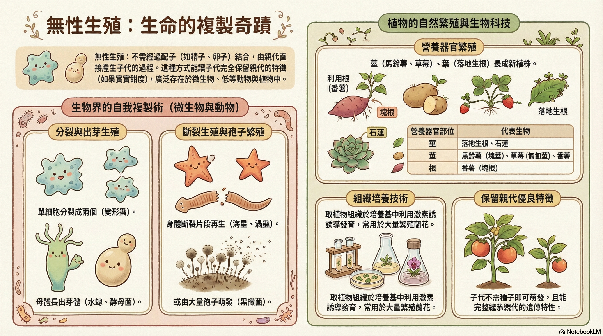

親代 產生 子代 的過程不需經過 配子 的 結合，稱為 無性生殖。無性生殖 的方式可分為： 分裂生殖、出芽生殖、斷裂生殖、 孢子繁殖、營養器官繁殖 和 組織培養 等。

第 1 題｜無性生殖的定義
單選題哪一個描述最符合「無性生殖」？
第 2 題｜辨識無性生殖方式
多選題請選出屬於「無性生殖方式」的選項（可複選）。
第 3 題｜無性生殖種類 × 代表生物配對
配對題組（下拉選單）請將「無性生殖種類」配對到最常見的「代表生物／例子」。
（1）分裂生殖
（2）出芽生殖
（3）斷裂生殖
（4）孢子繁殖
（5）營養器官繁殖
（6）組織培養
每一列都要選完，才會啟用「檢查答案」。
第 4 題｜配對題（例子 → 方式）
下拉選單配對把例子配對到最符合的無性生殖方式。
（1）變形蟲一分為二，形成兩個個體
（2）水螅身上長出小芽，長大後分離成新個體
（3）真菌釋放孢子，孢子發育成新個體
（4）馬鈴薯的塊莖長芽，形成新的植株
注意：本題每一列都要選完，才會啟用「檢查答案」。